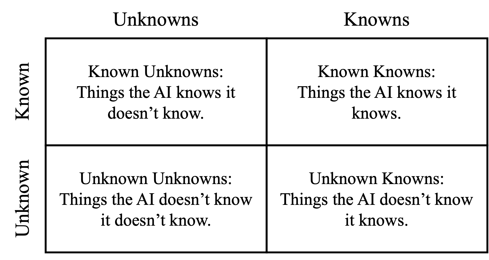
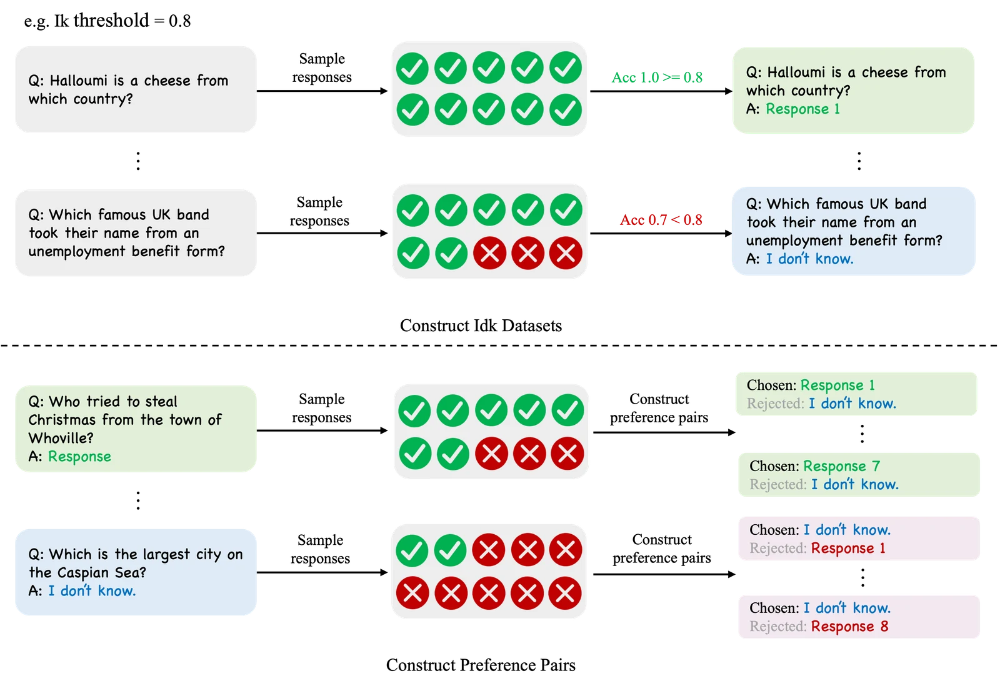
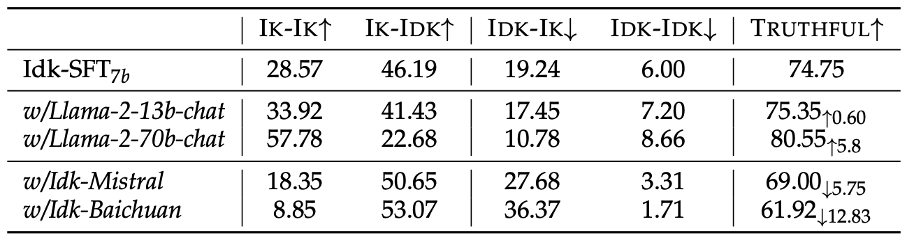
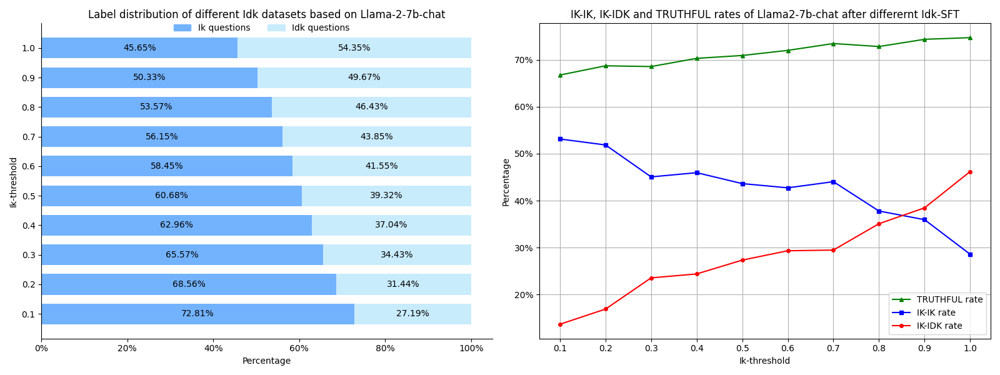
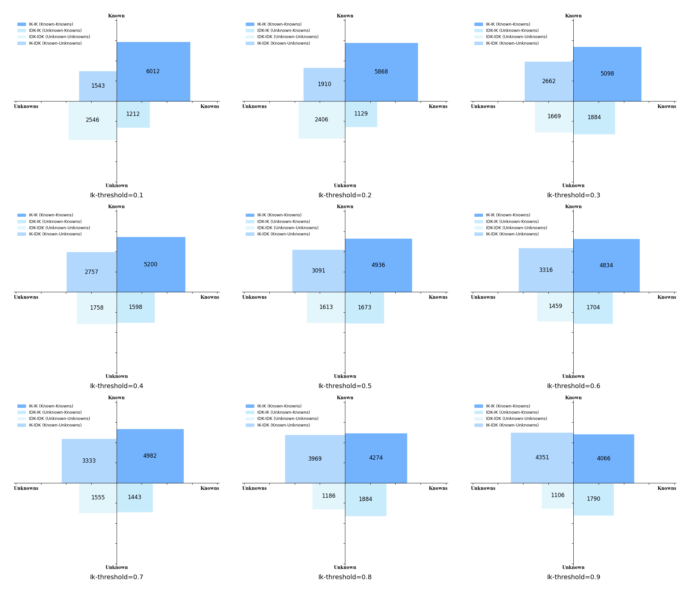

引言
近来，基于大型语言模型（LLMs）的AI助手在各种任务中都表现出了令人印象深刻的性能，包括与用户闲聊、解决数学问题、编写代码和调用外部工具等。
尽管拥有广泛的世界知识，大型语言模型仍然非常容易出现模型幻觉，如产生一些事实性错误或模仿性错误
本文的主要发现如下：
- 使用Idk数据集进行对齐后，AI助手能够在很大程度上知道它们知道什么和不知道什么，并拒绝回答那些他们不知道的问题。 例如Llama-2-7b-chat最多能够明确地确定它是否知道测试集中78.96%的问题的答案。 并且对齐后的AI助手在分布外测试集上的表现也比较良好。
- 在不同对齐方法中，监督式微调（Supervised Fine-tuning）会使模型过于谨慎，导致错误地拒绝它本应该知道的问题。 但是，偏好感知优化（Preference-aware Optimization）可以帮助缓解这种现象，减少错误拒绝回答已知问题的情况。
- 用于定义已知和未知的问题的不确定性阈值会影响AI助手的行为。 被标记为“我不知道”的问题越多，AI助手拒绝回答问题的可能性就越大。 但总的来说，使用一个更高的阈值可以得到回复错误更少，总体上更加真实的AI助手。
- 参数量更大的模型更容易区分它知道什么和不知道什么。 例如，与Llama-2-7b-chat相比，Llama-2-70b-chat在使用有监督微调后大约可以得到5.8%的性能提升。
知识象限：划分AI助手的不同知识

AI助手对自身知识的理解可以通过知识象限来划分
Idk 数据集: 确定AI助手究竟知道什么，不知道什么

为了让AI助手知道自己知道什么和不知道什么，我们尝试使用一个专门的"I don't know"(Idk)数据集来对齐AI助手。
Idk数据集中包含了特定AI助手知道和不知道答案的问题。
我们基于一个流行的知识密集型的开放域问答数据集TriviaQA
如Figure 2上半部分所示，我们对于每个问题随机采样十次回复，然后判断这些回复是否正确，得到对于每个问题的准确率。 对于准确率高于给定Ik threshold的问题，我们认为模型知道这个问题的答案，并随机选取一个模型的生成的正确答案作为标注回复，否则我们认为模型不知道这个问题的答案，并使用一个拒绝回答的模版作为标注回复，我们在图中用"I don't know."表示。 Figure 2下半部分展示了我们构建偏好数据的方法。 为了构建偏好数据，我们会首先使用一半的Idk数据进行SFT训练，然后使用经过SFT的模型在另一半的Idk数据上收集回复，构造偏好对。 每个偏好对都由一个问题，一个被选择的回复（chosen）和一个被拒绝的回复（rejected）组成。 对于每个问题，我们在经过SFT的模型上采样十个回复。 对于模型知道答案的问题，即图中浅绿色框所示，我们使用所有模型生成的所有正确回复作为chosen回复，而拒答模版作为rejected回复。 对于模型不知道答案的问题，即图中淡蓝色框所示，我们使用模型生成的所有错误回复作为rejected回复，而拒答模版作为chosen回复。 为了简单起见，我们将Ik threshold设为1.0。 即对于一个问题，只有模型的十个回复全部正确，我们才认为模型知道这个问题的答案。 我们最后再讨论Ik threshold的不同取值对于模型行为的影响。
对齐：让AI助手知道自己知道什么，不知道什么
在有了Idk数据集之后，我们就可以尝试通过对齐让AI助手学会感知自己的知识边界，当遇到自己不知道的知识时，礼貌地拒绝回答用户的提问。
对于原始的AI助手，比如一个Llama-2-7b-chat模型，我们发现它没有表现出明显的拒绝回答自己不知道的问题的行为

如Figure 3所示，通过提示词直接让模型拒绝回答它不知道的问题在一定程度上是有效的，但仍然存在大量的"IDK-IK"和"IDK-IDK"的问题。 在使用IDK数据集进行SFT训练后，"IDK-IK"和"IK-IK"问题的数量显著减少，表明模型感知自己知识边界的能力已经得到增强。 然而，我们发现SFT会带来一个意外的副作用，即模型会变得更加保守，导致"IK-IK"问题的数量有所减少。 但是，我们进一步发现，与SFT模型相比，使用偏好感知优化（如DPO）可以缓解这个现象，鼓励模型更多地回答问题，减少错误拒绝回答它知道的问题的情况。

我们在Figure 4中展示了更详细的实验结果，包括SFT、DPO
测试集中包含的IK-IK和IK-IDK问题的数量可以近似地看成是一个上限，TRUTHFUL是IK-IK和IK-IDK占比的和，因为IK-IK和IK-IDK的问题都是一种真实的回答，不会产生额外的虚假信息，因此TRUTHFUL可以代表模型的真实性。 简单地使用一个Idk提示词让模型拒绝回答它不知道的问题可以有一定的效果，但模型的TRUTHFUL率仍然只有66.93%，存在较多IDK-IDK问题。 Idk-SFT可以将TRUTHFUL率提高到74.75%，但会导致IK-IK率的下降，我们这是一种SFT的一种副作用，可以被看作是一种“对齐税”。 更进一步，我们发现，偏好感知优化可以鼓励模型更多地回答问题，从而减轻这种副作用。 DPO、PPO和BoN等偏好优化算法都可以在保持相对较高的IK-IDK率的同时减少IK-IK的下降。 Idk-BoN实现了最高的TRUTHFUL率，Idk-HIR可以提高IK-IDK率但对IK-IK率帮助较小。 然而，Idk-HIR提供了一种不需要重新训练模型的Ik threshold切换方法。 总的来说，通过将AI助手与Idk数据集（代表它的知识边界）对齐，我们可以将IDK-IK和IDK-IDK问题转化为IK-IK和IK-IDK问题。 AI助手能够清楚地感知到在测试集的大多数问题它是否知道答案，与对齐之前相比，真实性显著提高。
虽然TriviaQA本身就无法通过在训练集上微调来提升测试集性能（训练集不会引入测试集需要的知识），我们还是额外的引入了两个不同数据集来作为Out-of distribution的测试，使用TriviaQA训练的模型在OOD的测试集上也表现出了良好的泛化能力。 我们基于Natural Questions使用相同的方法构建了Idk数据集（只包含测试集部分），Ik threshold同样设定为1.0。 Natural Questions上的结果与TriviaQA相似，与简单使用提示相比，训练过的模型取得了更高的TRUTHFUL率。 在需要全部拒绝回答的ALCUNA测试集上，模型也能拒绝回答大多数的问题。
消融：影响AI助手感知自己知识边界的因素

模型大小的影响
大型语言模型的能力通常与其参数量大小相关，较大的模型往往会表现出出更强的能力。 因此，为了探究模型大小的影响，我们在Llama-2-7b-chat、Llama-2-13b-chat和Llama-2-70b-chat这三个大小的模型上进行了Idk-SFT训练，来探究模型大小对AI助手认识自己知识局限性的影响。 需要注意的是，不同模型对应的Idk数据集的标签分布不一致（模型越大，IK-IK问题越多），这导致IK-IK率和IK-IDK率无法直接横向对比。 因此，我们主要关注不同模型的TRUTHFUL率。 从Figure 5中的实验结果可以看出，13B模型的TRUTHFUL率略高于7B模型。 70B模型的TRUTHFUL率则显著高于13B和7B模型。 这表明，更大的模型的确更加擅长区分它们知道的问题和不知道的问题。
数据来源的影响
不同的预训练模型由于其独特的预训练过程而拥有不同的知识。 在训练过程中，我们为不同的预训练模型构建了模型特定的Idk数据集，这是因为我们希望模型能够根据其内部知识判断它是否知道问题的答案，而不是学会识别某些特定模式的问题。 模型特定的Idk数据集可以将模型的内部知识与Idk数据集的标签联系起来。 为了探究使用非模型特定的Idk数据集对于训练是否有影响，我们分别使用Mistral-7B-Instruct-v0.1和Baichuan2-7B-chat构建了两个Idk数据集，分别命名为"Idk-Mistral"和"Idk-Baichuan"。 从Figure 5中的实验结果可以看出，使用非模型特定的Idk数据集，如“Idk-Mistral”或“Idk-Baichuan”，确实会导致模型TRUTHFUL率的下降。 由于Idk-Mistral和Idk-Baichuan数据集中有大量的Idk问题，训练后的模型倾向于更多地拒绝回答问题，这导致了IK-IK问题数量的减少，远低于测试集中所占的比例。 这表明，构建模型特定的Idk数据集对于帮助模型感知它知道什么不知道什么是必要的。
Ik threshold的影响

这里我们讨论不同Ik threshold对模型行为的影响。 我们主要关注Ik threshold对Idk-SFT的影响，并针对Llama-2-7b-chat进行实验。 Ik threshold最直接影响的就是Idk数据集中标签的分布，更高的阈值代表着更多的问题会被标记为“我不知道”。 如Figure 6左图所示，阈值越高，Idk问题所占的比例越大。 这是因为当Ik threshold高时，只有那些模型置信度很高的问题才会被标注为模型已知的问题。 如Figure 6右图所示，提高Ik threshold会导致IK-IK率下降，IK-IDK率上升。 随着Ik threshold的提高，模型的TRUTHFUL率将继续提高。 换句话说，设定一个较高的Ik threshold有助于模型更好地区分它所知道和不知道的知识，使模型整体上更加真实。 相反，设定一个较低的Ik threshold可以使模型更有帮助，因为IK-IK问题的数量会增加。 此外，我们发现随着数据集中Idk问题的比例增加，模型倾向于更频繁地拒绝回答问题。

我们在Figure 7中展示了使用不同Ik threshold值对应的Idk数据集对Llama-2-7b-chat进行SFT后，知识象限的分布情况。 可以看到，随着Ik threshold的提高，IK-IK问题的数量会下降，IK-IDK问题的数量会上升，总的TRUTHFUL率会升高。
结论
在这个工作中，我们探讨了“AI助手能否知道自己不知道？”这个问题。 我们发现，通过将AI助手，如Llama-2-7b-chat，与一个模型特定的，记录了它知道和不知道的问题的Idk("I don't know")数据集进行对齐，AI助手在很大程度上能够识别出它所不知道的问题。 在开放领域问答的测试中，Llama-2-7b-chat能够对于78.96%的问题准确地确定自己是否知道，并拒绝回答自己不知道的问题。 为了实现这一点，我们探索了多种对齐的策略来使用Idk数据集，包括监督式微调(SFT)和偏好感知优化。 我们的分析显示，决定模型是否知道某个问题的Ik threshold会影响模型拒答的倾向。 此外，使用非模型特定的Idk数据集往往会降低性能。 使用参数量更大的模型，如Llama-2-70b-chat，则可以取得更高的TRUTHFUL率。 AI助手能够拒绝回答超出其知识范围问题的能力有效地减少了模型的事实性错误等幻觉。我们认为这是一个真实的AI助手所需要具备的重要能力。